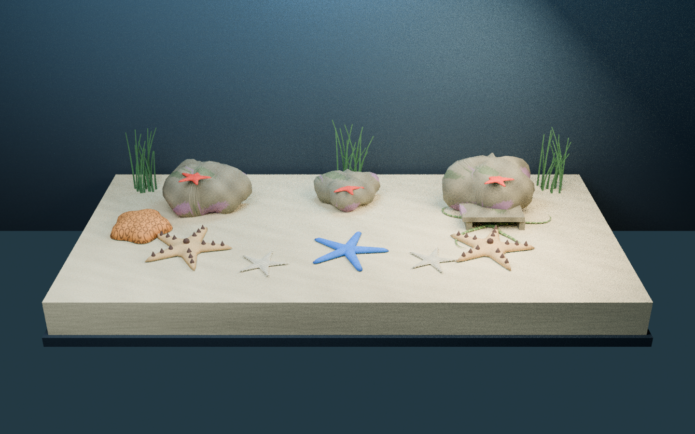
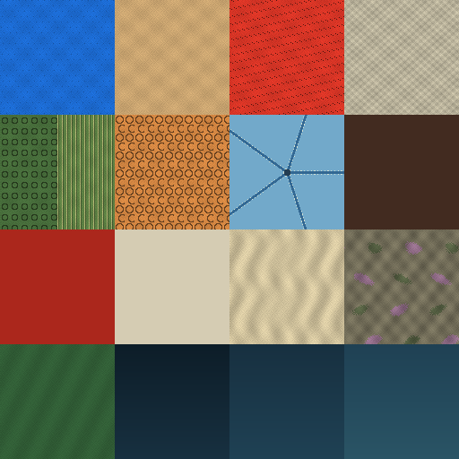

Source asset review · 20 November 2026
Sea Stars
Six species, a sand-flat tank, and the blue Linckia’s underside and arm poses. These views render the authored meshes and skins under presentation lighting. Gameplay and device acceptance remain pending.

The six species
The player
The texture atlas

The packed Blender master includes the tank scenery, the default ten-animal arrangement, arm rigs and pose actions. The static scenery uses 3,474 triangles in four groups. D11 live settings are deferred.